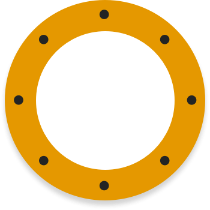
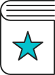
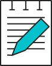
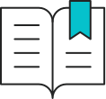

Our impact on young pirates


Reading age improved 50% faster than age related expectations

100% of parents have seen a positive impact on literacy abilities

MAKE A DONATION
Reading increased from once weekly to multiple times or every day!